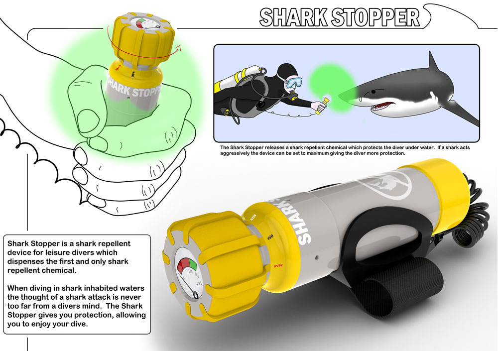

I tracked down and secured an opportunity to design a shark repellent device for Shark Defence (an American company that specialises in shark repellant chemicals).
I conducted in-depth contextual research with Surfers and Divers (common shark attack victims) and Sharks (Black Tip Reef Sharks and Bull Sharks) in the Bahamas alongside the Bimini Shark Lab and Eric Stroud (CEO of Shark Defence). This research allowed me to fully understand shark and human behavior and how the two species interacted. I designed two products that addressed the needs of Divers and Surfers. Both products were designed to fit with the users existing set up. My idea of combining the shark repellant chemical with surf wax has been taken forward by Shark Defence.
